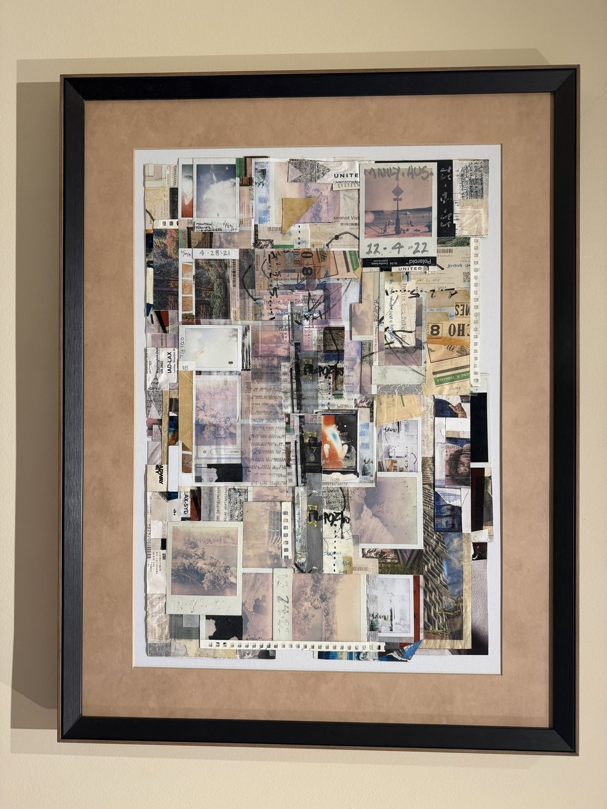
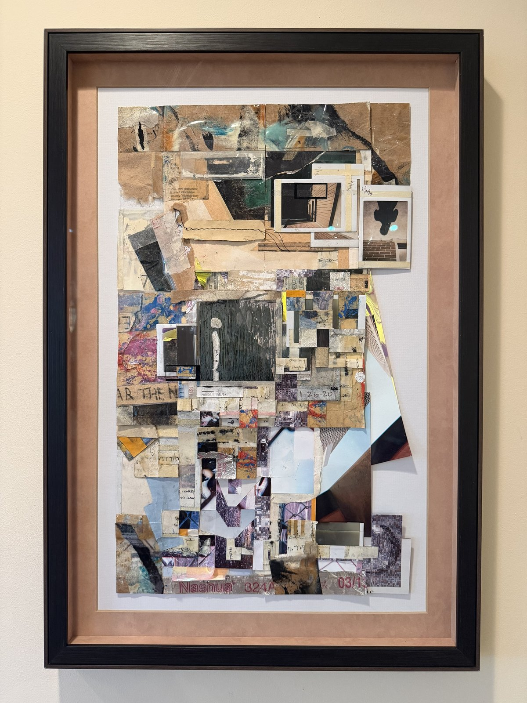
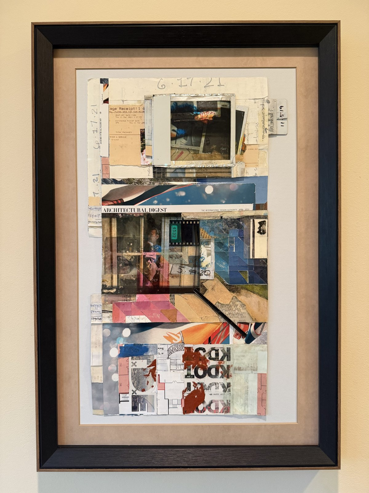
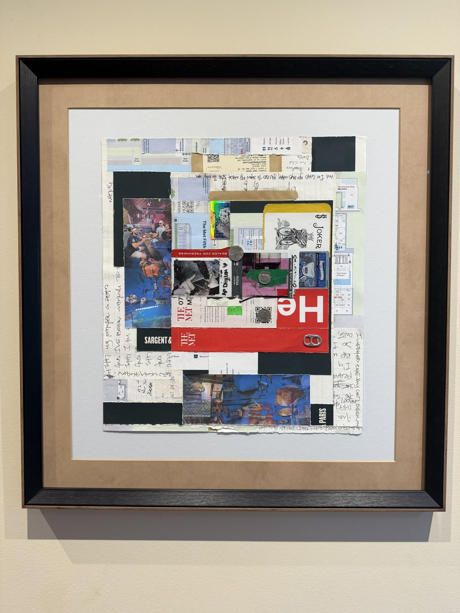
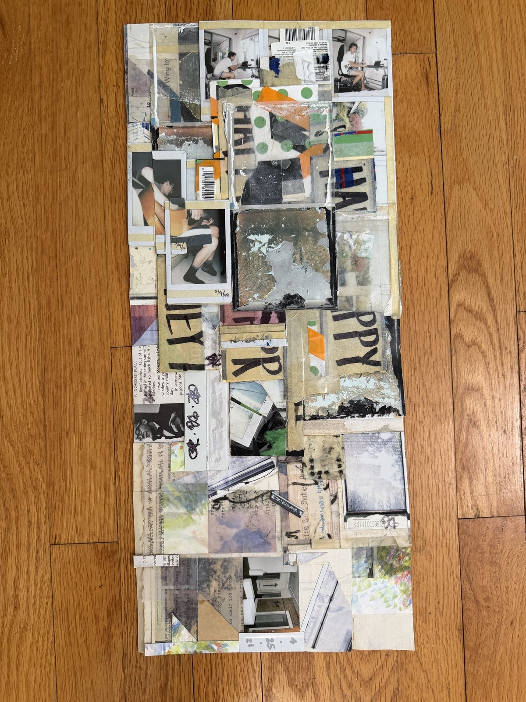
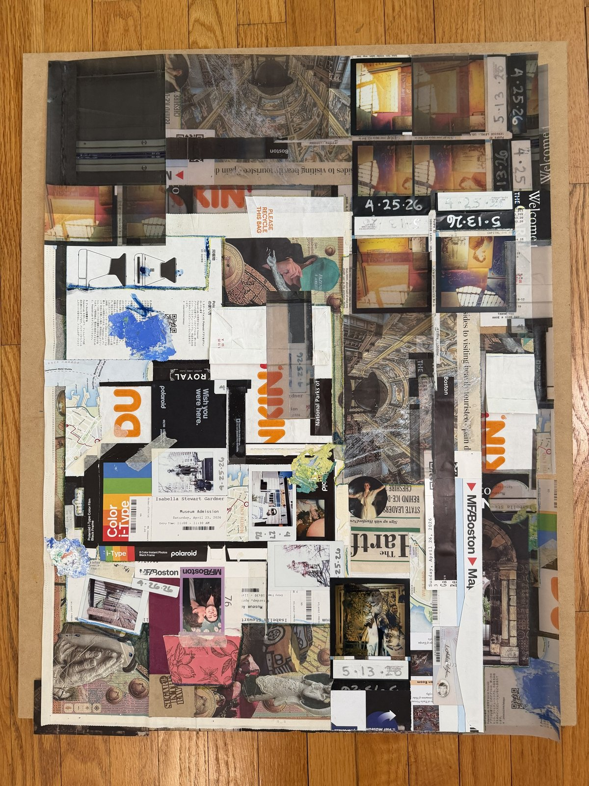

Works 6
-

Matthew Livingston Amadeus, 2025 Collage Contact for price Each collage is wired on the back of its frame for every orientation its shape allows. Image orientation is presented at random. -

Matthew Livingston i, 2024 Collage Contact for price Each collage is wired on the back of its frame for every orientation its shape allows. Image orientation is presented at random. -

Matthew Livingston Collage with Portraits, 2024 Collage Contact for price Each collage is wired on the back of its frame for every orientation its shape allows. Image orientation is presented at random. -

Matthew Livingston NYNY, 2025 Collage Contact for price Each collage is wired on the back of its frame for every orientation its shape allows. Image orientation is presented at random. -

Matthew Livingston HEY AMATEUR: COLLAGE, 2026 Collage Contact for price Each collage is wired on the back of its frame for every orientation its shape allows. Image orientation is presented at random. -

Matthew Livingston Boston Spring, 2026 Collage Contact for price Each collage is wired on the back of its frame for every orientation its shape allows. Image orientation is presented at random.